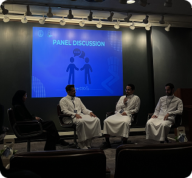
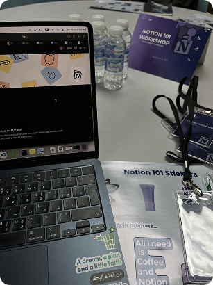
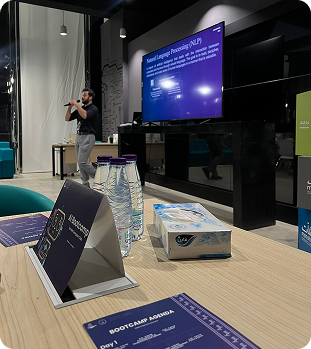
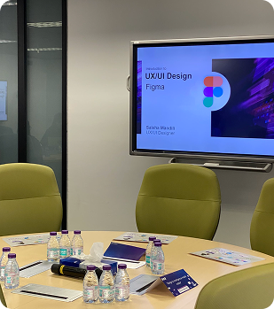
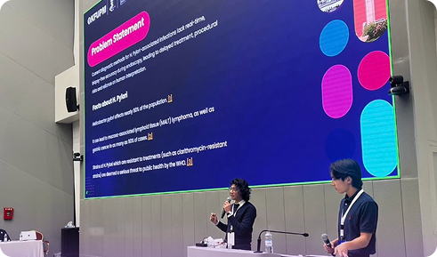
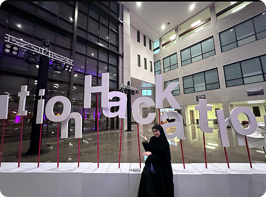

Blogs
A visual diary of my favorite moments.

A visual diary of my favorite moments.

Bringing KFUPM alumni back to campus—not as students, but as tech startup founders. Hearing their journeys from university ideas to real-world companies gave us an unfiltered look into the startup ecosystem.

One of our most fun collaborations was partnering with the Notion Community at KFUPM. We wanted to step away from the traditional tech talks and keep things completely relaxed. This hands-on workshop was just a great excuse to hang out, build out our digital workspaces side-by-side, and see how everyone customizes their setups.

There's learning about AI, and then there's living it for three days straight. Hosted at the inspiring Montshaat venue, this workshop was a masterclass in artificial intelligence. We were guided by a phenomenal presenter who had a knack for bringing intricate AI concepts to life.

Sometimes the best way to learn is just hanging out with like-minded people. This UI/UX workshop was all about keeping things friendly and accessible. We stripped away the pressure of a formal class and just spent the time designing & sharing feedback.

Saving the most unforgettable for last. Partnering with UCL, we organized the Solution Hackathon to challenge students to innovate and craft real software solutions for our university campus. Between managing the event, jumping into insightful workshops, and meeting an incredible crowd of builders, it was a blur of brilliant ideas and unforgettable memories!
Leading content creation and event management for the club has been the absolute highlight of my university journey. Between the lines of code and late-night study sessions, getting to collaborate with my closest friends to bring these massive insightful events to life is what I'll remember the most.
